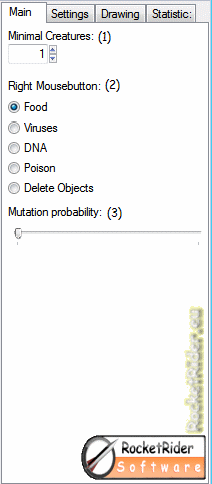
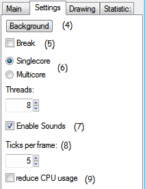
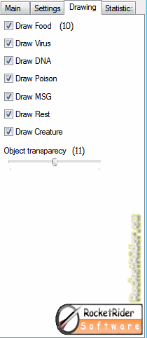
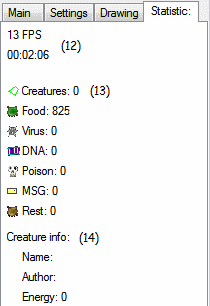
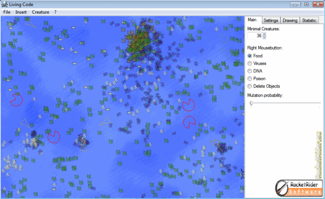
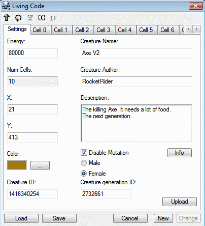
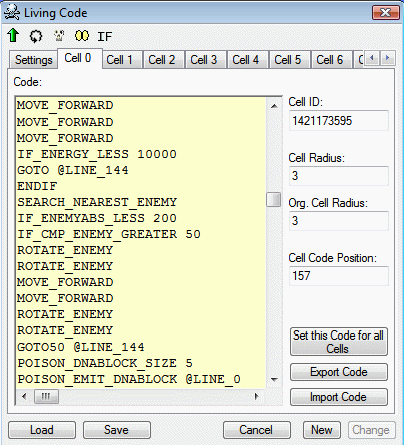
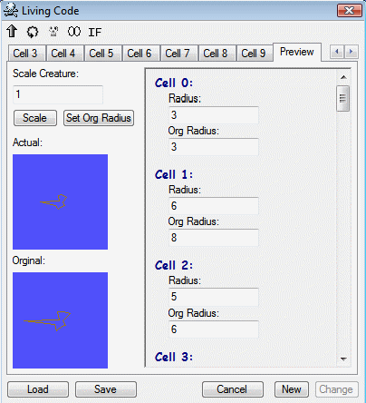
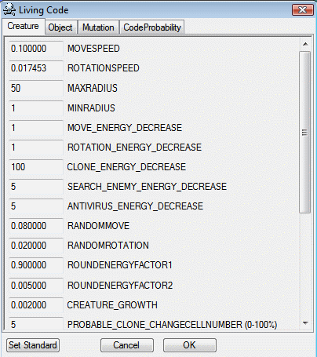

HELP
|
 |
(1)
This field sets the
(2)
Here you can choose what you want to set on the right mouse
button.
(3)
With this can you control the mutation rate of living. |
|
 |
(4) The evolution can continue in the background mode, so it has more speed and you can work on your computer.
(5) The pause feature allows to break and continue the program.
(6)
If a processor flags they may have this option for possibly more
speed.
(7) Turns the sound on..
(8) This option allows them to manually set the maximum speed.
(9) This option relieves their processor, however, is the speed of the programme reduced.
|
|
 |
(10) Here, they can adjust what items should be drawn.
(11) Sets the transparency of the objects. |
|
 |
(12)
Here you can read the FPS.
(13) Here you can see the number of creatures and objects.
(14)
Here is information about the selected creature.
|

Under
the menu "Insert" you will find many already created
beings, under the menu item entitled "Own Creature" they
can design their own creatures.
Under the item "Download Creatures" can you download creatures from the Internet.
|
 |
If you choose a creature comes following window. With "New" can carry the creatures. "Change" could be the selected creature. Or you can upload the creatures with "upload" to the Internet.
About the check box "Disable mutation" can the mutation for a living being completely off. This is useful if the creatures do not change. |
|
Among the cells find them in the code, it can be used different codes for every cell. |
|
|
 |
In addition, they are still the radius of the cell. The creature growing radius of the original cell radius. If you have a certain form, they should want to create the preview mode.
With a right click the Insert menu opens. There you will find all the commands with appropriate parameters. More to the commands can be found below under "command reference" |
|
The preview tool allows you well for their particular form beings implement. |
|
|
 |
"Set Org. radius" setst the radius to the org. radius.
|
|
Sub-options
to find many other settings. |
|
|
 |
|
|
The 3DView mode is only under Windows DX7 possible. |
|
Command Reference
MOVE_FORWARD
Moves the creature forward.
MOVE_FORWARD2X
Moves the creature with double speed forward.
MOVE_BACKWARD
Moves the creature back.
EATING_YES
Turns the food intake of the cell to on.
EATING_NO
Turns the food intake of the cell to off.
EATING_EMIT
Emits energy.
POISON_EMIT
ID
Emits
poison.
The parameter ID is the ID of the poison.
If the ID
is an even number, is the poison paralysing the opposing cell.
If
the ID is an odd number, is the poison stale the opposing cell
energy.
EMITTOENEMY_POISON
ID
This is the same
like POISON_EMIT, but it emits in the direction of the nearest enemy.
POISON_IMMUN1
ID
Immunise the cell
against a poison.
The parameter is the ID of the poison, against
the creature should be immunised.
POISON_IMMUN2
ID
Immunise the cell
against a poison.
The parameter is the ID of the poison, against
the creature should be immunised.
POISON_IMMUN3
ID
Immunise
the cell against a poison.
The parameter is the ID of the poison,
against the creature should be immunised.
POISON_YES
Turns generating of poison to on.
If the
generation is off POISON_EMIT does nothing.
POISON_NO
Turns generating of poison to off.
If the
generation is off POISON_EMIT does nothing.
POISON_VIRUS_MIN_ENERGY
MINENERGY
Sets the
minimum energy when no more viruses should be created.
The
parameter MINENERGY defines the minumum energy value.
POISON_EMIT_VIRUS
CODEPOSITION
Emits a virus,
which is injected at the specified position in the code.
Possible
values are 0-511.
Example of a dangerous virus:
POISON_VIRUS_MIN_ENERGY
0
POISON_EMIT_VIRUS 0
POISON_DNA_CODE
CODE
Defines the code
for POISON_EMIT_DNA.
Parameter: command, for example, 1 for
MOVE_BACKWARD
See appendix.
POISON_EMIT_DNA
CODEPOSITION
Emits the
DNA, which is injected at the specified position in the
code.
Parameter: position in the code
EMITTOENEMY_DNA
CODEPOSITION
This
is the same like POISON_EMIT_DNA, but it emits in the direction of
the nearest enemy.
POISON_EMIT_DNABLOCK
JUMP MARK
Emits the
DNA, which is injected at the same position in the code.
Bsp:
@TEST
INC_CELL_RAD
POISON_DNABLOCK_SIZE
3
POISON_EMIT_DNABLOCK @TEST
EMITTOENEMY_DNABLOCK
JUMP
MARK
This
is the same like POISON_EMIT_DNABLOCK, but it emits in the direction
of the nearest enemy.
POISON_DNABLOCK_SIZE
SIZE
Defines
the size for POISON_EMIT_DNABLOCK, maximal 5 lines.
MSG_EMIT
MSG
Emits a
message.
Parameters: Sets the Message-ID which message has.
Example:
IF_ENERGY_LESS
1000
MSG_EMIT 500
ENDIF
ROTATE_LEFT
Rotate left.
ROTATE_RIGHT
Rotate right.
ROTATE_MSG
Rotates in the direction of the most recent message.
ROTATE_DNA
Rotates in the direction of the most recent DNA.
ROTATE_POISON
Rotates in the direction of the most recent poison.
ROTATE_FOOD
Rotates in the direction of the most recent food.
ROTATE_ANTI_MSG
Rotates in the anti direction of the most recent
message.
ROTATE_ANTI_DNA
Rotates in the anti direction of the most recent DNA.
ROTATE_ANTI_POISON
Rotates in the anti direction of the most recent
poison.
ROTATE_ANTI_FOOD
Rotates in the anti direction of the most recent food.
ROTATE_ENEMY
Rotates
in the direction of the nearest enemy.
It needs
SEARCH_NEAREST_ENEMY
ROTATE_ANTI_ENEMY
Rotates in the anti direction of the nearest enemy.
It needs SEARCH_NEAREST_ENEMY
IF_ENERGY_GREATER
VALUE
When the energy is greater than the declared
value.
There is no nested Ifs, but you can still nest.
Example:
IF_ENERGY_GREATER
5000
...
ENDIF
IF_ENERGY_LESS
VALUE
When the energy is
less than the declared value.
IF_ENERGY_EQUAL
VALUE
When
the energy is equal to the declared value.
IF_ENERGYINC_GREATER
VALUE
When the energy
is greater than the growth declared value.
IF_ENERGYDEC_GREATER
VALUE
When the energy
loss is greater than the declared value.
IF_MSG_GREATER
VALUE
When
Message-ID larger than the declared value.
IF_MSG_LESS
VALUE
When
Message-ID smaller than the declared value.
IF_MSG_EQUAL
VALUE
When
Message-ID equal to the declared value.
IF_FOOD_GREATER
VALUE
When the number
of absorbed food larger than the declared value.
IF_FOOD_LESS
VALUE
When the number of
absorbed food smaller than the declared value.
IF_FOOD_EQUAL
VALUE
When
the number of absorbed food equal to the declared value.
IF_POISON_GREATER
VALUE
When the number
of the absorbed poison, since the last call of the warrant, greater
than the declared value.
IF_POISON_LESS
VALUE
When
the number of the absorbed poison, since the last call of the
warrant, smaller than the declared value.
IF_POISON_EQUAL
VALUE
When
the number of the absorbed poison, since the last call of the
command, just as the declared value.
IF_POISONID_GREATER
VALUE
If
the poison ID of the most recent is larger than the declared value.
IF_POISONID_LESS
VALUE
If
the poison ID of the most recent is smaller than the declared value.
IF_POISONID_EQUAL
VALUE
If
the poison ID of the most recent is equals to the declared value.
IF_DNA_GREATER
VALUE
If
the number of DNA absorbed since the last call of this command is
greater than the dclared value.
IF_DNA_LESS
VALUE
If the number of
DNA absorbed since the last call of this command is less than the
dclared value.
IF_DNA_EQUAL
VALUE
If
the number of DNA absorbed since the last call of this command is
equals to the dclared value.
IF_VARIABLE_GREATER
VALUE
If the active variable set with “VARIABLE” is
larger than the declared parameter.
Example:
VARIABLE
@A
@A
DL 0
IF_VARIABLE_LESS
VALUE
If
the active variable set with “VARIABLE” is less than the
declared parameter.
IF_VARIABLE_EQUAL
VALUE
If
the active variable set with “VARIABLE” equals to the
declared parameter.
IF_CELL_RAD_GREATER
VALUE
If
the cell radius is greater than the declared value.
IF_CELL_RAD_LESS
VALUE
If
the cell radius is less than the declared value.
IF_CELL_RAD_EQUAL
VALUE
If
the cell radius is equals the declared value.
IF_X_GREATER
VALUE
If the
x position is greater than the declared value.
IF_X_LESS
VALUE
If the
x position is less than the declared value.
IF_X_EQUAL
VALUE
If the
x position is equal the declared value.
IF_Y_GREATER
VALUE
If the
y position is greater than the declared value.
IF_Y_LESS
VALUE
If the y position
is less than the declared value.
IF_Y_EQUAL
VALUE
If the y position
is equal the declared value.
IF_ENEMYABS_GREATER
VALUE
If the
distance to the nearest enemy is greater than the declared value.
IF_ENEMYABS_LESS
VALUE
If the
distance to the nearest enemy is less than the declared value.
IF_ENEMYABS_EQUAL
VALUE
If the
distance to the nearest enemy is equal the declared value.
IF_CMP_ENEMY_GREATER
VALUE
It
checks the generations difference between this Creature and the
nearest Enemy.
IF_CMP_ENEMY_LESS
VALUE
It
checks the generations difference between this Creature and the
nearest Enemy.
IF_CMP_ENEMY_EQUAL
VALUE
It
checks the generations difference between this Creature and the
nearest Enemy.
IF_GENERATION_GREATER
VALUE
If the
generations ID is greater than the declared value.
IF_GENERATION_LESS
VALUE
If
the generations ID is less than the declared value.
IF_GENERATION_EQUAL
VALUE
If
the generations ID is equal the declared value.
IF_NUMOFCELLS_GREATER
VALUE
If the
number of cells is greater than the declared value.
IF_NUMOFCELLS_LESS
VALUE
If the
number of cells is less than the declared value.
IF_NUMOFCELLS_EQUAL
VALUE
If
the number of cells is equal the declared value.
IF_CELLNUMER_GREATER
VALUE
If the
number of the cell is greater than the declared value.
IF_CELLNUMER_LESS
VALUE
If the number of
the cell is less than the declared value.
IF_CELLNUMER_EQUAL
VALUE
If the number of the cell is equal the
declared value.
IF_MALE
If
the Creature is male.
IF_FEMALE
If
the Creature is female.
IF_AGE_GREATER
VALUE
If the
age of the creature is greater than the declared value.
IF_AGE_LESS
VALUE
If the
age of the creature is less than the declared value.
IF_AGE_EQUAL
VALUE
If the
age of the creature is equal the declared value.
IF_ABSORBABLE
If
ABSORBABLE_YES is set.
ENDIF
The
end of the condition.
CLONE
Copies the creature
COPY_MIN_ENERGY
ENERGY
Sets the minimum energy for copying.
COPY50_50
Copies with 50:50 parts of energy.
COPY25_75
Copies with 25:75 parts of energy.
COPY5_95
Copies with 5:95 parts of energy.
COMBINECOPY
The
creature crosses with the nearest creature.
RETURN
Starts the code from the beginning.
GOTO
JUMP MARK
Goes
to jump mark.
Example:
@A
GOTO @A
GOTO50
JUMP MARK
Goes
to jump mark.
The probability that the command works is 50%
GOTO25
JUMP MARK
Goes
to jump mark.
The probability that the command works is 25%
GOTO5
JUMP MARK
Goes
to jump mark.
The probability that the command works is 5%
RNDGOTO
Continues the code at a random position.
VARIABLE
VARIABLE
Sets the active
variable.
Example:
VARIABLE
@A
@A
DL 0
VARIABLE_ZERO
Sets the active variable to 0
VARIABLE_DEC
Reduces the active variable by 1
VARIABLE_INC
Increases active variable by 1
VARIABLE_SET
VALUE
Sets
the active variable to the specified value.
VARIABLE_ADD
VALUE
Increases
the active variable by the specified value.
VARIABLE_SUB
VALUE
Reduces
the active variable by the specified value.
VARIABLE_MUL
VALUE
Multiplies
the active variable with the specified value.
VARIABLE_DIV
VALUE
Divides
the active variable with the specified value.
VARIABLE_XOR
VALUE
Combining the value of the active variable with the
specified value with a binary XOR link.
VARIABLE_OR
VALUE
Combining the value of the active variable with the
specified value with a binary OR link.
VARIABLE_AND
VALUE
Combining
the value of the active variable with the specified value with a
binary AND link.
VARIABLE_MOD
VALUE
Performs
a division of active variable by the specified value and saves the
rest in the active variable.
VARIABLE_COPY
VARIABLE
Copy the value
of the variable into the new variable.
Example:
VARIABLE
@A
VARIABLE_COPY @B
@A
DL 0
@B
DL 0
VARIABLE_RND
Sets
the value of the variable to a random value.
INC_CELL_RAD
Increases the cell radius by 1
DEC_CELL_RAD
Reduces the cell radius by 1
SIN_CELL_RAD
SPEED
Changes
the cell radius in a wave form.
Example:
SIN_CELL_AMPRAD
20
SIN_CELL_MIDRAD 30
SIN_CELL_RAD 20
SIN_CELL_AMPRAD
AMP
Sets the amplitude
of the Sinusoidal radius change.
SIN_CELL_MIDRAD
MID
Sets the centre
point for the Sinusoidal radius change.
TIMER_SET
TIME
Defines the period after the timer jump to a mark
specified with TIMER_GOTO.
Example:
@timer
TIMER_SET 500
TIMER_GOTO @timer
TIMER_YES
...
TIMER_GOTO
JUMP MARK
Defines the
jump mark of the timer.
TIMER_YES
Turns the timer on.
TIMER_NO
Turns the timer off.
SEARCH_NEAREST_ENEMY
Search
the nearest enemy, this commands need this function:
IF_ENEMYABS_GREATER
IF_ENEMYABS_LESS
IF_ENEMYABS_EQUAL
IF_CMP_ENEMY_GREATER
IF_CMP_ENEMY_LESS
IF_CMP_ENEMY_EQUAL
ROTATE_ENEMY
ROTATE_ANTI_ENEMY
DEST_POINT_X
VALUE
Sets
the x Position for this commands:
ROTATE_DEST_POINT
ROTATE_ANTI_DEST_POINT
DEST_POINT_Y
VALUE
Sets
the y Position for this commands:
ROTATE_DEST_POINT
ROTATE_ANTI_DEST_POINT
PAUSE
This
Command make a break for one task.
ANTIVIRUS
This
command checks a random position in the code for a virus infection.
It deletes viruses and set there a PAUSE.
PROTECTVIRUS
This
Command protect against viruses.
PROTECTDNA
This
Command protect against DNA.
MUTATE
Random
mutation at a random place.
MUTATE_LINE
@LINE
Mutate
the defined line before it will be executed.
BLOCKEXEC
@POS
Block
the executation on the defined position and executes instead the code
set with REPLACEMENT_CMD.
@line_0
MUTATE
...
REPLACEMENT_CMD
4
BLOCKEXEC
@line_0
EMITTOENEMY_FOOD
Emits
food to the nearest enemy.
EMITTOENEMY_MSG
MSGID
Emits
a message to the nearest enemy.
REPLACEMENT_CMD
CODE
Defines
the command, to be replaced.
The command is needed for BLOCKEXEC
and REPLACE_CMD.
REPLACE_CMD
CODE
Replaces
the code specified by the parameter code with the value set with
REPLACEMENT_CMD at a random place in the code.
REPLACEMENT_CMD
0
REPLACE_CMD 4
VARIABLE_GETGLOBAL
Reads
the global variable for the creature, and stores the value in the
active variable.
VARIABLE_SETGLOBAL
Saves
the value of the active variable in the global variable of the
creature.
VARIABLE
@TEST
VARIABLE_SETGLOBAL
...
@TEST
DB 0
ABSORBABLE_YES
Other
creatures can absorb your energy.
ABSORBABLE_NO
Other
creatures can not absorb your energy.
ABSORB_ENEMY
You
can absorb other creatures, but ABSORBABLE_YES must be set in the
other creature.
NOP
Performs no operation.
Sample:
A simple example:
MOVE_FORWARD
ROTATE_FOOD
RETURN
A self modifying code for experts:
@ANF
VARIABLE
@VAR
VARIABLE_ADD 256
@VAR
DL 2626
VARIABLE_SET 4
GOTO
@ANF
appendix, code numbers:
0
= MOVE_FORWARD
1 = MOVE_BACKWARD
2 = EATING_YES
3 =
EATING_NO
4 = EATING_EMIT
5 = POISON_EMIT
6 =
POISON_IMMUN1
7 = POISON_IMMUN2
8 = POISON_IMMUN3
9 =
POISON_YES
10 = POISON_NO
11 = POISON_VIRUS_MIN_ENERGY
12 =
POISON_EMIT_VIRUS
13 = POISON_DNA_CODE
14 = POISON_EMIT_DNA
15 = POISON_EMIT_DNABLOCK
16 = POISON_DNABLOCK_SIZE
17 =
MSG_EMIT
18 = ROTATE_LEFT
19 = ROTATE_RIGHT
20 =
ROTATE_MSG
21 = ROTATE_DNA
22 = ROTATE_POISON
23 =
ROTATE_FOOD
24 = ROTATE_ANTI_MSG
25 = ROTATE_ANTI_DNA
26 =
ROTATE_ANTI_POISON
27 = ROTATE_ANTI_FOOD
28 =
IF_ENERGY_GREATER
29 = IF_ENERGY_LESS
30 = IF_ENERGY_EQUAL
31
= IF_ENERGYINC_GREATER
32 = IF_ENERGYDEC_GREATER
33 =
IF_MSG_GREATER
34 = IF_MSG_LESS
35 = IF_MSG_EQUAL
36 =
IF_FOOD_GREATER
37 = IF_FOOD_LESS
38 = IF_FOOD_EQUAL
39 =
IF_POISON_GREATER
40 = IF_POISON_LESS
41 = IF_POISON_EQUAL
42
= IF_POISONID_GREATER
43 = IF_POISONID_LESS
44 =
IF_POISONID_EQUAL
45 = IF_DNA_GREATER
46 = IF_DNA_LESS
47 =
IF_DNA_EQUAL
48 = IF_VARIABLE_GREATER
49 = IF_VARIABLE_LESS
50
= IF_VARIABLE_EQUAL
51 = IF_CELL_RAD_GREATER
52 =
IF_CELL_RAD_LESS
53 = IF_CELL_RAD_EQUAL
54 = ENDIF
55 =
CLONE
56 = COPY_MIN_ENERGY
57 = COPY50_50
58 = COPY25_75
59
= COPY5_95
60 = RETURN
61 = GOTO
62 = GOTO50
63 =
GOTO25
64 = GOTO5
65 = RNDGOTO
66 = VARIABLE
67 =
VARIABLE_ZERO
68 = VARIABLE_DEC
69 = VARIABLE_INC
70 =
VARIABLE_SET
71 = INC_CELL_RAD
72 = DEC_CELL_RAD
73 =
SIN_CELL_RAD
74 = SIN_CELL_AMPRAD
75 = SIN_CELL_MIDRAD
76 =
VARIABLE_ADD
77 = VARIABLE_SUB
78 = VARIABLE_MUL
79 =
VARIABLE_DIV
80 = VARIABLE_XOR
81 = VARIABLE_OR
82 =
VARIABLE_AND
83 = VARIABLE_MOD
84 = TIMER_SET
85 =
TIMER_GOTO
86 = TIMER_YES
87 = TIMER_NO
88 =
IF_X_GREATER
89 = IF_X_LESS
90 = IF_X_EQUAL
91 =
IF_Y_GREATER
92 = IF_Y_LESS
93 = IF_Y_EQUAL
94 =
IF_ENEMYABS_GREATER
95 = IF_ENEMYABS_LESS
96 =
IF_ENEMYABS_EQUAL
97 = ROTATE_ENEMY
98 = ROTATE_ANTI_ENEMY
99
= SEARCH_NEAREST_ENEMY
100 = IF_CMP_ENEMY_GREATER
101 =
IF_CMP_ENEMY_LESS
102 = IF_CMP_ENEMY_EQUAL
103 =
DEST_POINT_X
104 = DEST_POINT_Y
105 = ROTATE_DEST_POINT
106
= ROTATE_ANTI_DEST_POINT
107 = VARIABLE_COPY
108 = PAUSE
109
= ANTIVIRUS
110 = PROTECTVIRUS
111 = COMBINECOPY
112 =
IF_GENERATION_GREATER
113 = IF_GENERATION_LESS
114 =
IF_GENERATION_EQUAL
115 = IF_NUMOFCELLS_GREATER
116 =
IF_NUMOFCELLS_LESS
117 = IF_NUMOFCELLS_EQUAL
118 =
IF_CELLNUMER_GREATER
119 = IF_CELLNUMER_LESS
120 =
IF_CELLNUMER_EQUAL
121 = IF_MALE
122 = IF_FEMALE
123 =
IF_AGE_GREATER
124 = IF_AGE_LESS
125 = IF_AGE_EQUAL
126 =
VARIABLE_RND
127 = MOVE_FORWARD2X
128
= MUTATE
129 = MUTATE_LINE
130 = BLOCKEXEC
131 =
EMITTOENEMY_FOOD
132 = EMITTOENEMY_MSG
133 =
REPLACEMENT_CMD
134 = REPLACE_CMD
135 = VARIABLE_GETGLOBAL
136
= VARIABLE_SETGLOBAL
137 = ABSORBABLE_YES
138 =
ABSORBABLE_NO
139 = ABSORB_ENEMY
140 = IF_ABSORBABLE
141 =
EMITTOENEMY_POISON
142 = EMITTOENEMY_DNA
143 =
EMITTOENEMY_DNABLOCK
144
= PROTECTDNA
145 = NOP
(c)2008
RocketRider
http://www.RocketRider.eu